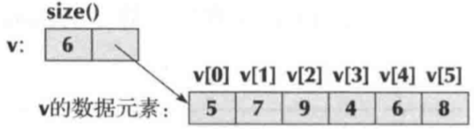

vector 是最简单、最常用的数据存储形式。
vector 似乎一组可以通过索引来访问的顺序存储的数据元素。

我们可以用 vector 名和索引号的组合来表示一个具体的数据元素
例如：v[0]是5，v[1]是7。
vector 的索引号总是从“0”开始，每次加1.
vector “知道自己的大小”，它不仅存储数据元素，也存储元素的个数。
vector 可以用如下形式表示：
vector<int>v = {5,7,9,4,6,8};
vector<string>city = {"shanghai","beijing","nanjing"};vector 只能存储与其数据类型相同的数据：
v[2] = "beijing"; //错误，试图将一个字符串赋给一个整型
city[2] = 99; //错误，试图将一个整型赋给一个字符串当一个给定大小的 vector 被定义后(但并未指定数据元素值)，根据数据类型的不同，它的每一个数据元素将被赋予不同的缺省值。
vector<int>vi(6); //vector的6个整型元素初始化为0
vector<string>vs(4); //vector的4个字符串元素初始化为""(空字符串)